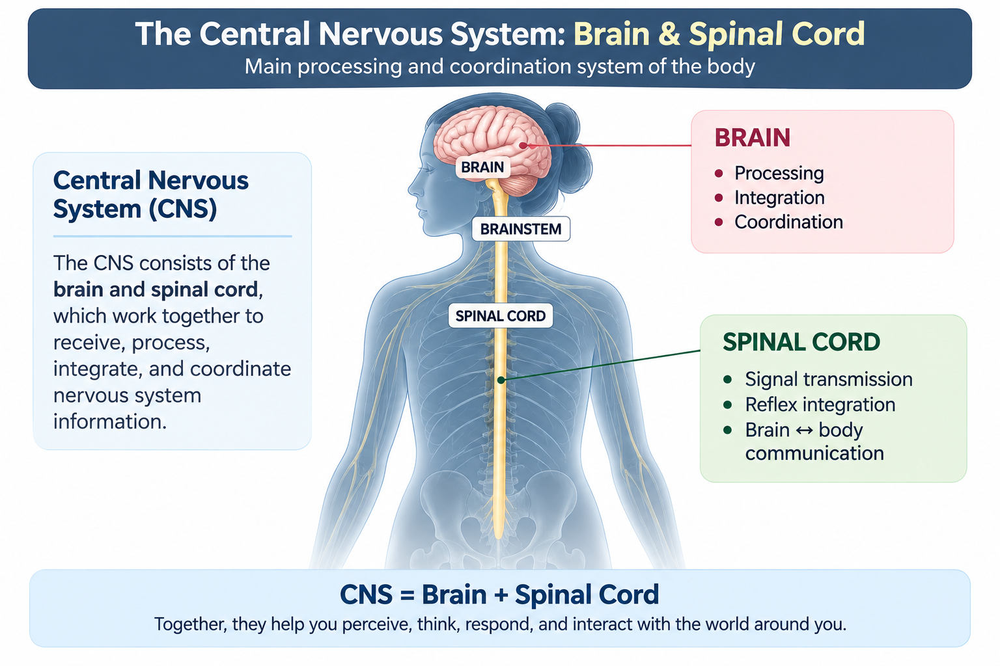
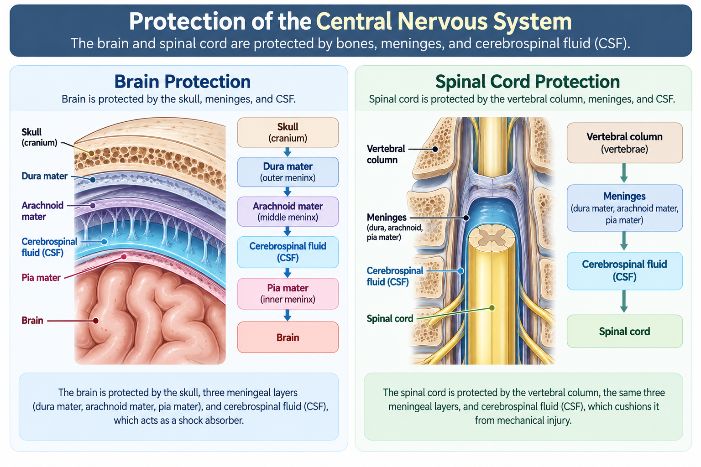
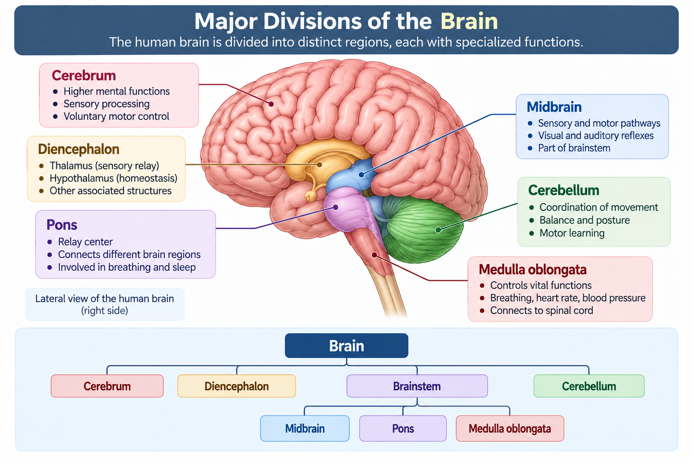
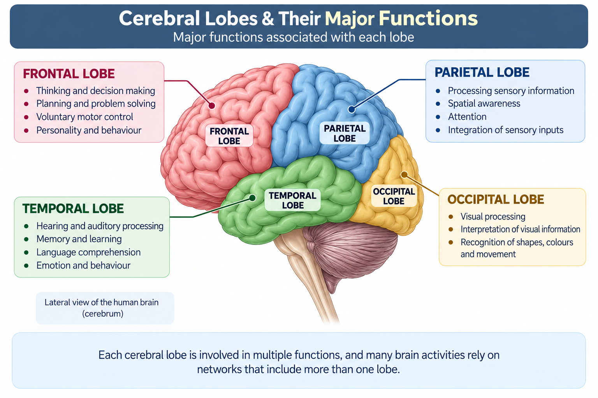
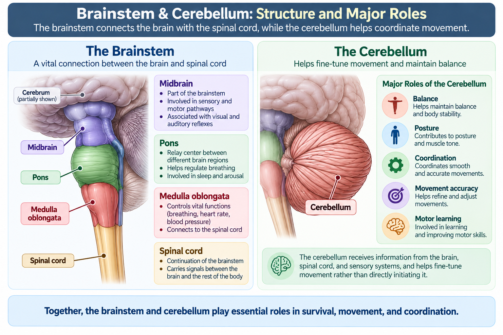
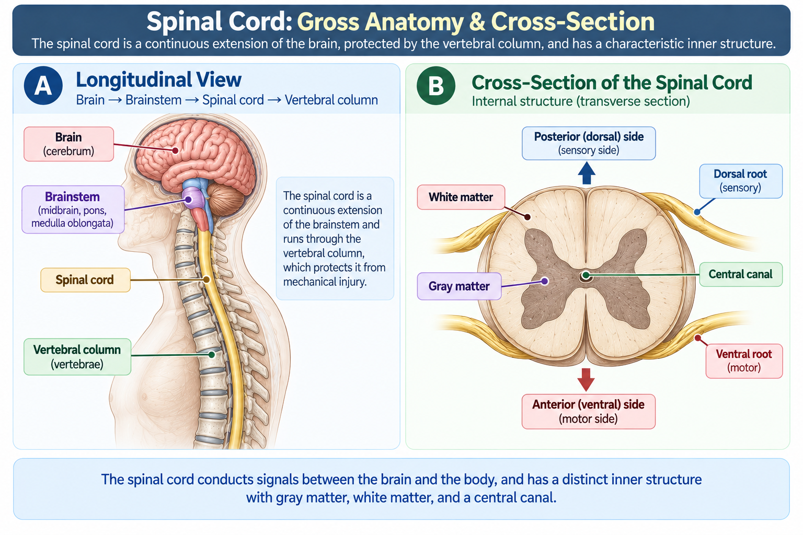
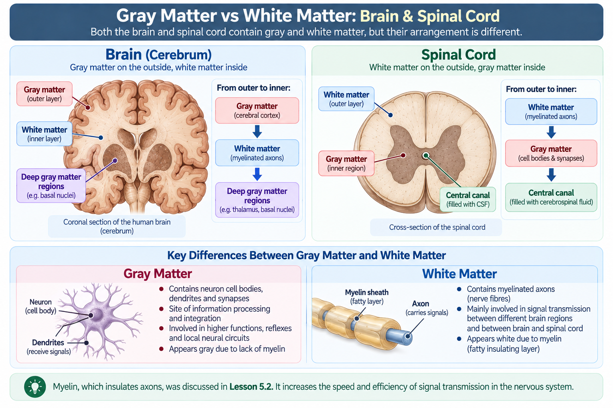
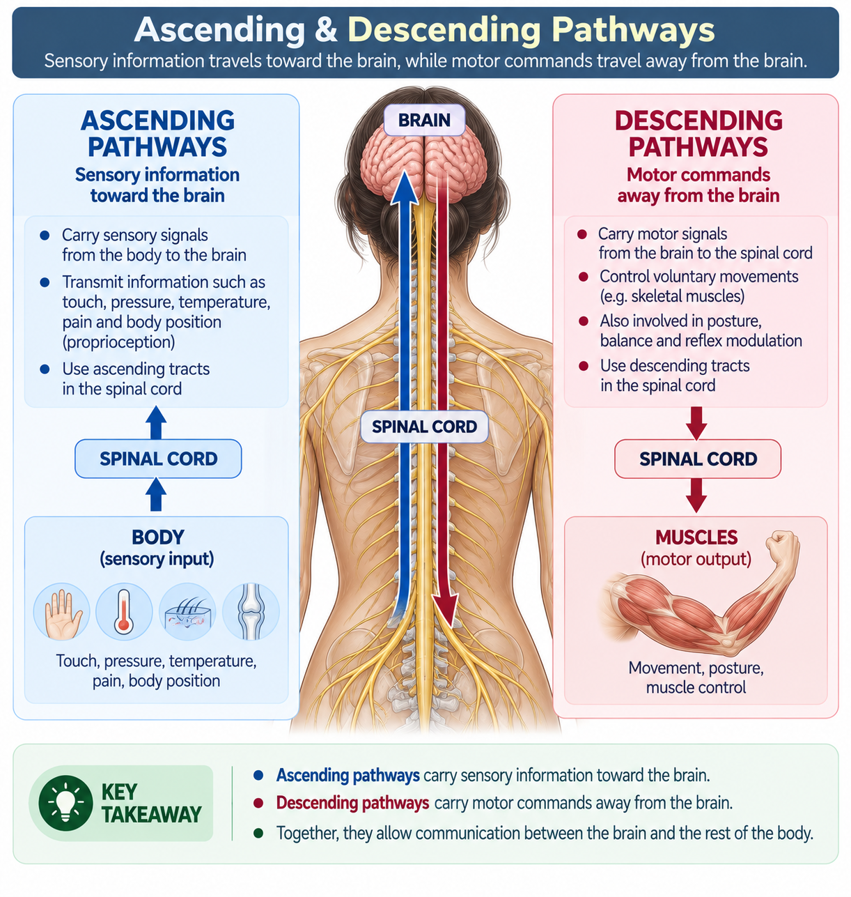
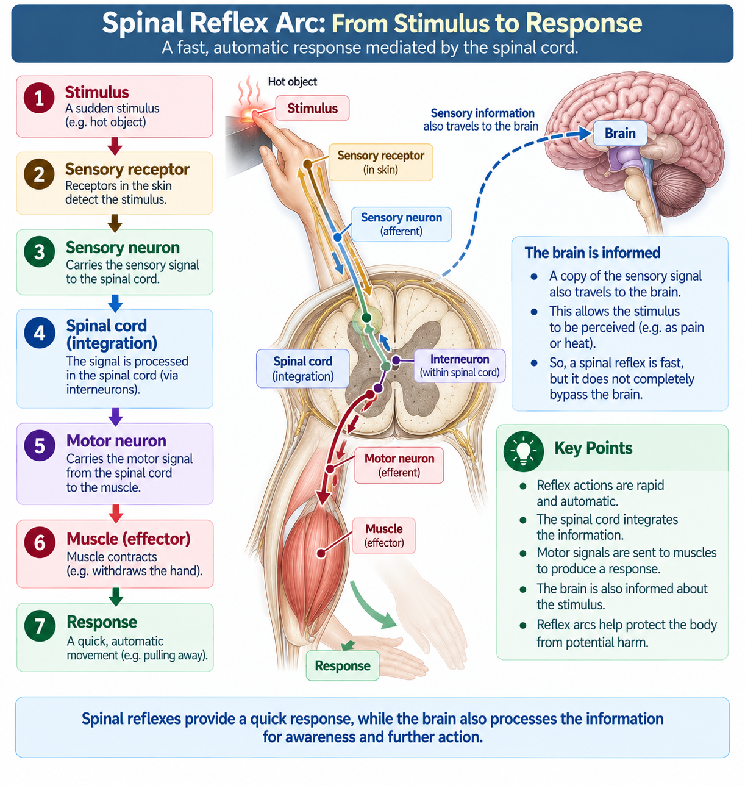

The Central Nervous System (CNS) is the body's main processing and coordination system. It consists of the brain and spinal cord, which work together to receive, process, integrate, and coordinate nervous system information.
📑 Table of Contents
- 🎯 Learning Objectives
- 📖 Introduction
- 🧠 What Is the Central Nervous System?
- 🛡️ Protection of the CNS
- 🧠 Major Divisions of the Brain
- 🧩 Cerebrum
- ⚙️ Diencephalon
- 🧠 Brainstem & Cerebellum
- 🧵 Spinal Cord: Structure & Organization
- ⚪ Gray Matter & White Matter
- 🔄 Major CNS Pathways
- ⚡ Reflexes & Spinal Cord Integration
- 📌 CNS at a Glance
- 🧠 Quick Revision
- ❓ Practice Quiz
🎯 Learning Objectives
By the end of this lesson, you should be able to:
- Define the Central Nervous System (CNS) and identify its two major components.
- Explain how the brain and spinal cord contribute to information processing and coordination.
- Identify the major structures that protect the CNS.
- Recognize the major divisions of the brain.
- Describe the basic organization of the cerebrum, including its major lobes.
- Distinguish the major roles of the thalamus and hypothalamus.
- Identify the major parts of the brainstem and describe the broad role of the cerebellum.
- Describe the basic structure and organization of the spinal cord.
- Distinguish gray matter from white matter.
- Explain the basic difference between ascending and descending CNS pathways.
- Describe how the spinal cord participates in reflex responses.
📖 Introduction
In the previous lesson, we explored how neurons communicate with one another through synapses and neurotransmitters.
But where are these enormous networks of neurons organized and processed?
The answer begins with the Central Nervous System. The CNS consists of the brain and spinal cord and serves as a major center for processing, integration, and coordination.

🧠 What Is the Central Nervous System?
The Central Nervous System (CNS) consists of two major structures:
Brain
A major center for processing, integration, coordination, and higher nervous system functions.
Spinal Cord
A major communication pathway between the brain and the rest of the nervous system, and an important center for reflex functions.
Together, these structures receive and process nervous information and coordinate responses throughout the body.
🛡️ Protection of the CNS
The brain and spinal cord are delicate structures. Several protective systems surround and support them.
Skull
Protects the brain from physical injury.
Vertebral Column
Surrounds and protects the spinal cord.
Meninges
Three protective connective tissue coverings surrounding the CNS.
Cerebrospinal Fluid
CSF cushions the CNS and contributes to its supportive internal environment.
The Three Meningeal Layers
- Dura mater Tough outer layer
- Arachnoid mater Middle layer
- Pia mater Thin inner layer closely associated with CNS tissue

📌 Remember
Skull → Brain • Vertebral column → Spinal cord
Both are further protected by the meninges and cerebrospinal fluid (CSF).
🧠 Major Divisions of the Brain
The brain contains several major regions that work together rather than functioning as isolated units.

🧩 Cerebrum
The cerebrum is the largest region of the brain. It is divided into two cerebral hemispheres and contains the cerebral cortex on its outer surface.
Left Hemisphere
One half of the cerebrum, connected with the opposite side through major neural pathways.
Right Hemisphere
The other half of the cerebrum, also connected extensively with the opposite hemisphere.
Major Cerebral Lobes
Frontal Lobe
Associated with planning, decision-making, voluntary movement, and other higher functions.
Parietal Lobe
Important for somatic sensory processing and spatial awareness.
Temporal Lobe
Associated with auditory processing, memory, and language-related functions.
Occipital Lobe
Primarily associated with visual processing.
The cerebral cortex is the outer layer of gray matter covering much of the cerebrum. It participates in complex sensory, motor, and cognitive processing.

A cerebral lobe is associated with many functions, and most complex functions involve networks across multiple brain regions.
⚙️ Diencephalon
The diencephalon contains several important structures. Two major structures introduced at this level are the thalamus and hypothalamus.
Thalamus
Acts as an important relay and processing center for many types of sensory information traveling toward the cerebral cortex.
Hypothalamus
Helps regulate homeostasis, including temperature, hunger, thirst, and coordination of autonomic and endocrine functions.
The hypothalamus has important functional connections with the pituitary gland and helps coordinate nervous and endocrine regulation.
🧠 Brainstem & Cerebellum
Brainstem
The brainstem forms an important connection between higher brain regions and the spinal cord and contributes to several essential functions.
Cerebellum
The cerebellum contributes to the coordination and refinement of movement.
- Balance
- Posture
- Movement coordination
- Movement accuracy
- Motor learning

🧵 Spinal Cord: Structure & Organization
The spinal cord extends from the brainstem through the vertebral canal. It provides major communication pathways between the brain and the rest of the nervous system.
Basic Cross-Sectional Organization
Located centrally in the typical spinal cord cross-section.
Surrounds the gray matter and contains many ascending and descending axons.
A small channel located near the center of the spinal cord.

⚪ Gray Matter & White Matter
The CNS contains regions of gray matter and white matter. Their arrangement differs between the brain and spinal cord.
Gray Matter
Contains many neuronal cell bodies, dendrites, and synaptic regions.
Main idea: Processing & integrationWhite Matter
Contains many axons, especially myelinated axons that form communication pathways.
Main idea: Signal transmissionBrain vs Spinal Cord
🧠 Brain
The cerebral cortex is predominantly gray matter, while much of the deeper region is white matter.
Deep gray matter regions also exist.🧵 Spinal Cord
The typical spinal cord has gray matter centrally and white matter externally.

In the typical spinal cord cross-section, gray matter is inside and white matter is outside. The cerebral cortex of the brain is primarily gray matter on the outside.
🔄 Major CNS Pathways
Information travels through the CNS in different directions. At a basic level, two important concepts are ascending and descending pathways.
Ascending Pathways
Carry sensory information toward the brain.
Descending Pathways
Carry motor commands from the brain toward the spinal cord and motor systems.

⚡ Reflexes & Spinal Cord Integration
Some rapid protective responses can be integrated within the spinal cord. These responses are called reflexes.
A basic spinal reflex pathway can be represented as:
Sensory information can also travel toward the brain. The spinal cord can therefore participate in rapid reflex integration while the brain receives and processes sensory information as part of the broader response.

A reflex can be rapid because its initial integration can occur in the spinal cord, without waiting for conscious processing by the brain.
📌 CNS at a Glance
🧠 BRAIN
- Cerebrum
- Frontal Lobe
- Parietal Lobe
- Temporal Lobe
- Occipital Lobe
- Diencephalon
- Thalamus
- Hypothalamus
- Brainstem
- Midbrain
- Pons
- Medulla oblongata
- Cerebellum
🧵 SPINAL CORD
- Gray Matter
- White Matter
- Central Canal
- Ascending Pathways
- Descending Pathways
- Reflex Integration
🧠 Quick Revision
CNS = Brain + Spinal Cord
The brain is the major center for processing, integration, and coordination.
The spinal cord provides major pathways between the brain and the rest of the nervous system.
The CNS is protected by bone, meninges, and cerebrospinal fluid.
The three meninges are dura mater, arachnoid mater, and pia mater.
Major brain regions include the cerebrum, diencephalon, brainstem, and cerebellum.
The brainstem consists of the midbrain, pons, and medulla oblongata.
The cerebellum contributes to balance, posture, coordination, and movement accuracy.
Gray matter contains many neuronal cell bodies and synaptic regions.
White matter contains many axons, especially myelinated axons.
Ascending pathways generally carry sensory information toward the brain.
Descending pathways generally carry motor commands toward the spinal cord and motor systems.
The spinal cord can participate in rapid reflex integration.
❓ Practice Quiz
1. Which two structures make up the CNS?
- Brain and cranial nerves
- Brain and spinal cord
- Spinal nerves and ganglia
- Brainstem and peripheral nerves
Show Answer
B. Brain and spinal cord
2. Which structure is part of the brainstem?
- Cerebellum
- Thalamus
- Pons
- Cerebral cortex
Show Answer
C. Pons
3. Which meningeal layer is the outermost?
- Pia mater
- Arachnoid mater
- Dura mater
- Cerebral cortex
Show Answer
C. Dura mater
4. Which brain region is strongly associated with visual processing?
- Frontal lobe
- Parietal lobe
- Temporal lobe
- Occipital lobe
Show Answer
D. Occipital lobe
5. Which structure is especially important for balance and movement coordination?
- Cerebellum
- Thalamus
- Medulla
- Hypothalamus
Show Answer
A. Cerebellum
6. In a typical spinal cord cross-section, where is gray matter located?
- Mainly on the outside
- Mainly in the center
- Only in the meninges
- Only in the central canal
Show Answer
B. Mainly in the center
7. What do ascending pathways generally carry?
- Motor commands toward the body
- Sensory information toward the brain
- Hormones toward glands
- Blood toward the brain
Show Answer
B. Sensory information toward the brain
8. Which CNS structure can integrate some rapid reflex responses?
- Spinal cord
- Cerebellum only
- Occipital lobe only
- Thalamus only
Show Answer
A. Spinal cord